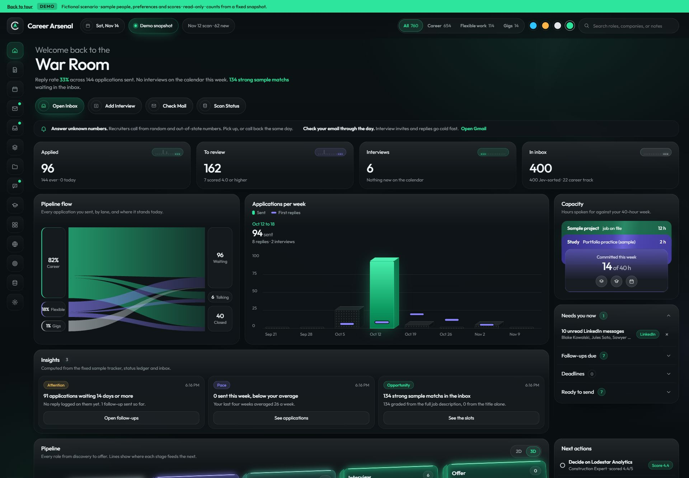

Know where to focus.
Follow-ups, approaching dates and ready-to-review roles rise into the attention list. The overview puts actionable items beside the bigger picture.
Explore the War RoomChoose Career, Flexible work or Gigs. Explore targeting parameters and the reasons behind sample fit scores. Profiles, parameters and scoring were already part of the system; this is my custom interface for using them.
Try interactive demoNo sign-in. Fictional sample people and companies.

Screenshot previewTry this viewThe War Room brings the application tracker into a daily overview. Click through to explore pipeline activity, expand follow-ups and inspect the records behind the totals.
Try it: Open the interactive view, then expand “Follow-ups due.”
Try this interactive viewTake it at your pace.
No automatic slides.
The tour images are clickable screenshot previews. Select one to open that view in the interactive demo, where you can switch profiles, search and click sample records.
The useful part is how the pieces connect. The War Room brings the search into focus, with enough context to decide what deserves attention next.
Follow-ups, approaching dates and ready-to-review roles rise into the attention list. The overview puts actionable items beside the bigger picture.
Explore the War RoomCareer, Flexible work and Gigs profiles organize different kinds of opportunities. Switch between them to explore the relevant roles while keeping the wider pipeline in reach.
Try the search profilesRole details, notes, prepared documents and interview rounds live within the same workspace. Move from the overview to the record behind it.
Explore sample packetsAdjust role, location and compensation preferences in Targeting. Apply them to recalculate example fit scores, inspect the point breakdown and see why an opportunity moves up or down. Save your preferences as a preset for this tab.
Explore parameters and scoringThe Floorplan map connects the screens to the code and the sample data behind them. Follow the demo path, or explore how the full local system is organized.
The people, companies, notes, preferences and scores are illustrative. Job records, counts and dates preserve a fixed source snapshot so the workflow has realistic scale. Applying targeting preferences recalculates fit scores with transparent sample rules in your browser; no live AI evaluation runs here.
Switch profiles, filter the pipeline and click sample records. Edit targeting parameters or save presets for this browser tab; use “Reset this demo session” to start again. Sending applications, messages, running scans and live agent chat remain disabled.
Personal documents are not included; Learn and Websites are intentionally empty.
Try interactive demo